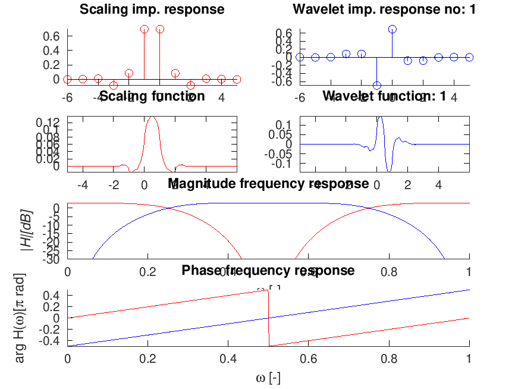

[h,g,a] = wfilt_symorth(N);
[h,g,a]=wfilt_symorth(N) with \(N\in {1,2,3}\) returns orthogonal near-symmetric (\(N==1\)) and symmetric near-orthogonal (\(N==[2,3]\)) wavelet filters from the reference.
The filters exhibit a coiflet-like behavior i.e. the scaling filter has vanishing moments too.
wfiltinfo('ana:symorth2');

wfiltinfo('syn:symorth2');
This code produces the following output:
DEMO_BLOCKPROC_BASICLOOP:
To run the demo, use one of the following:
demo_blockproc_basicloop('gspi.wav') to play gspi.wav (any wav file will do).
demo_blockproc_basicloop('dialog') to choose the wav file via file chooser dialog GUI.
demo_blockproc_basicloop(f,'fs',fs) to play from a column vector f using sampling frequency fs.
demo_blockproc_basicloop('playrec') to record from a mic and play simultaneously.
Avalable input and output devices can be listed by |blockdevices|.
Particular device can be chosen by passing additional key-value pair 'devid',devid.
Output channels of the device cen be selected by additional key-value pair 'playch',[ch1,ch2].
Input channels of the device cen be selected by additional key-value pair 'recch',[ch1].
F. Abdelnour and I. W. Selesnick. Symmetric nearly orthogonal and orthogonal nearly symmetric wavelets. The Arabian Journal for Science and Engineering, 29(2C):3 - 16, 2004.